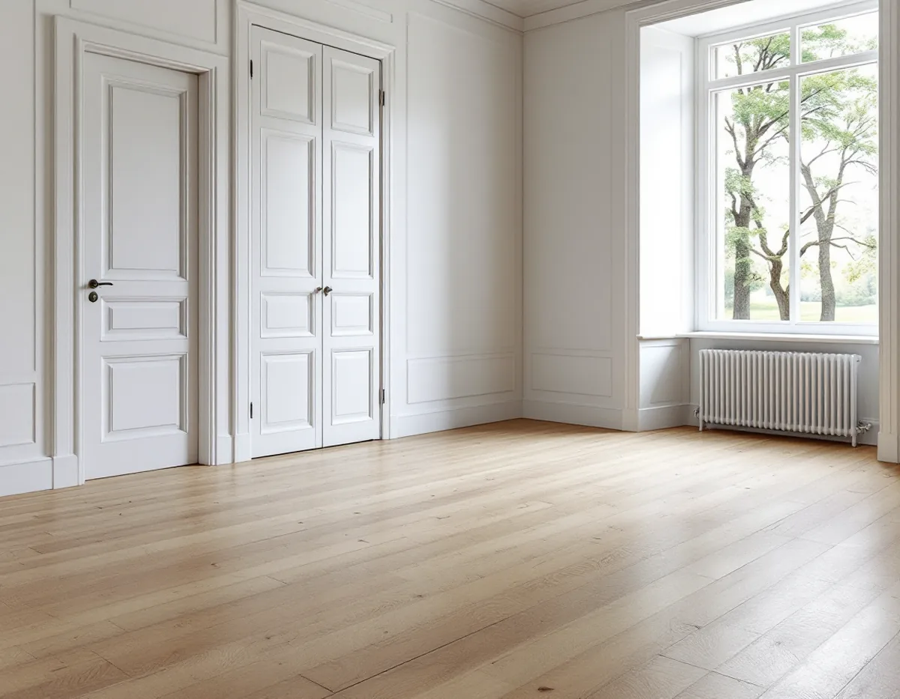
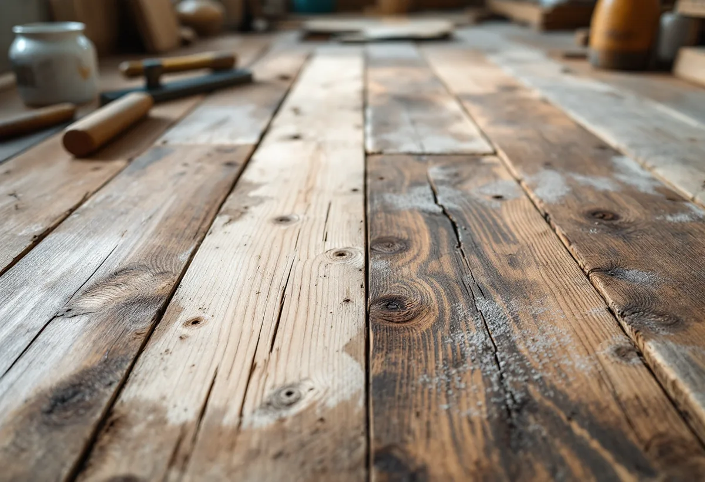

Besök
Vi går igenom rummen, lyfter en list och ser vad golvet är gjort av och hur det har behandlats tidigare.
Många villor i Danderyd har golv som är lika gamla som huset. Att slipa fram dem, laga dem eller lägga nytt är ett beslut som påverkar både rummet och husets värde. Geal Entreprenad AB slipar, lagar och lägger golv i hela Danderyd – Djursholm, Stocksund, Enebyberg och Danderyd – med gratis platsbesök och skriftligt kostnadsförslag.

Kulturmiljöhandboken beskriver kvarteren Delling och Gamla Djursholm vid Stora Värtans strand som platsen för några av Djursholms arkitekturhistoriskt mest intressanta villor. De spänner i ålder från 1890 till 1960-talet. Här står en stor brunmålad trävilla från 1890-talet, en medeltidsromantisk tegelvilla, en putsad klassicistisk villa från 1920-talet och en nästan brutalistisk betongvilla.
Exemplet visar hur olika ett golvjobb kan bli inom samma kvarter. I en trävilla vilar golvet på träbjälkar som rör sig med årstiderna. I en betongvilla ligger det på ett bjälklag som först behöver vara tillräckligt torrt. Golvbranschen rekommenderar att fukten i ett betongbjälklag kontrolleras innan avjämningsmassa läggs, så att den inte överstiger vad det nya golvet tål. Vi börjar därför med att ta reda på hur just ditt hus är byggt.

Handboken uppmanar till att försöka bevara de ursprungliga materialen, som med sin ålder och patina berättar om byggnadernas historia, äldre hantverksskicklighet och byggnadsteknik. Kommunens riktlinjer från 2024 lägger till att åtgärder ska utföras varsamt och med hänsyn till byggnadens särart även när fastigheten inte har något utpekat skydd. Kommunen ber dig också ta tidig kontakt för rådgivning om du planerar ändringar på eller inom din fastighet.
För golvet betyder det att vi hellre lagar än river. Skadade brädor kan bytas mot likvärdiga, gamla spikhål fyllas och ett slitet parti slipas ner utan att hela rummet tas om. Ett nytt golv ovanpå det gamla kan vara rätt, men det bör vara ett medvetet val och inte en följd av att ingen tittade under mattan.
Danderyds kommun har ett ritningsarkiv med handlingar som har lämnats in vid tidigare bygglov och andra åtgärder på fastigheten. Via kommunens e-tjänst går det att beställa bygglovsritningar för nästan alla byggnader i kommunen, men kommunen påpekar att det inte är säkert att allt du önskar finns kvar.
Inför ett större golvjobb är sektionsritningen det mest användbara bladet. Där syns ofta hur bjälklaget är uppbyggt, åt vilket håll bjälkarna går och om ett våningsplan har byggts om. Det hjälper oss att bedöma om golvvärme, ett tjockare golv eller en ny trappa går att få in utan att röra bärande delar. Ska bjälkar kapas eller förstärkas blir det en fråga för kommunen, och det säger vi till om redan vid besöket.
Riktlinjerna beskriver Enebyberg som en kommundel med tydliga årsringar, med bebyggelse från 1700-talet till 1970-talet. Bland de särskilt värdefulla miljöerna finns egnahemsområdet, där riktlinjerna lyfter fram äldre byggnadsdetaljer som fönster och portar i originalutförande.
Inne i ett egnahem som har byggts till i flera omgångar kan varje rum ha sin egen historia. Ett kök från en senare ombyggnad kan ligga några centimeter högre än hallen, och en tillbyggnad har kanske ett helt annat underlag än det ursprungliga huset. Vi mäter nivåerna i alla rum innan golvet väljs, så att trösklar och övergångar blir få och dörrarna inte behöver kapas i onödan.
Ett trägolv tål bara ett visst antal grundslipningar innan slitskiktet är förbrukat. Har golvet slipats några gånger tidigare kan det vara klokt att nöja sig med en lättare mellanslipning och ny lack eller olja, i stället för att gå ner till rent trä. Vi mäter hur mycket trä som finns kvar över sponten och föreslår den lättaste behandling som ger ett bra resultat.
Missfärgningar och mörka partier i gamla golv går sällan att slipa bort helt utan att golvet tunnas ut för mycket. Då kan en pigmenterad olja eller såpa jämna ut intrycket. Vi lägger en provyta där det inte syns, så att du ser resultatet innan hela rummet behandlas. Mer om golvtyper och ytbehandling finns på sidan om golvläggning.
Vi går igenom rummen, lyfter en list och ser vad golvet är gjort av och hur det har behandlats tidigare.
Om du har beställt ritningar ur kommunens arkiv går vi igenom dem tillsammans.
Du får ett skriftligt kostnadsförslag med laga, slipa eller lägga nytt som separata alternativ.
Trappor, dörrar och rum som inte berörs skyddas innan något damm uppstår.
Brädor lagas, golvet slipas i flera steg eller ett nytt golv läggs på ett riktat underlag.
Ytbehandlingen görs efter provytan, och du får råd om hur golvet ska skötas.
Skatteverket räknar slipning, lagning och byte av golv som rotarbete i ett småhus som du äger och bor i. Avdraget är 30 procent av arbetskostnaden och högst 50 000 kr per person och år. Tillsammans med rutavdrag är taket 75 000 kr.
Material och resor ger inget avdrag. Geal drar avdraget direkt på fakturan, så du betalar bara din del av arbetskostnaden.
Mest avgör golvets skick: hur många brädor som behöver bytas, hur mycket trä som finns kvar och om det finns gamla lim- eller färgrester. Rummens storlek, antal trappor och om möbler ska flyttas spelar också in. Platsbesöket är gratis och du får ett skriftligt kostnadsförslag.
Parkett, trägolv, klinker och slipning.
Golvläggning i Stockholm →Takbyte, takbesiktning och plåtarbeten.
Takläggare i Danderyd →Djursholm, Stocksund och Enebyberg.
Takrenovering i Danderyd →Tillbyggnad, tomt och kommunens riktlinjer.
Byggföretag i Danderyd →Villastäder, egnahem och grupphus i Danderyd.
Fasadrenovering i Danderyd →Lovplikt, klassning och spröjs i Danderyd.
Fönsterbyte i Danderyd →Villastäder, ritningar och ventilation.
Badrumsrenovering i Danderyd →Villastäder, egnahem och kommunens regler.
Köksrenovering i Danderyd →Villor, egnahem och grupphus i Danderyd.
Målare i Danderyd →Rännor, stuprör och beslag i Danderyd.
Plåtslagare i Danderyd →Altaner, staket och carport.
Snickare i Danderyd →Villastaden, takmaterial och solceller.
Takbyte i Danderyd →Funkis, grupphus och 1950-talsvillor.
Tillbyggnad i Danderyd →